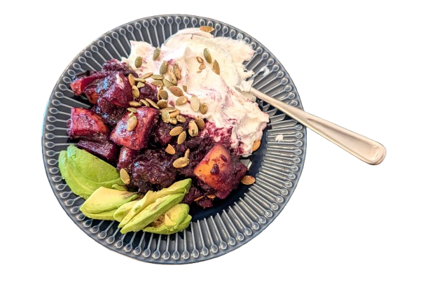

melt ghee in a small saucepan. add blueberries, apples, dates, and a couple tablespoons of water, cinnamon, and a dash of salt. cover, bring to a boil, then lower heat until apples are soft.
stir in ground flaxseed and allow to cook. mixture should be soft and jammy.
serve over greek yogurt. cottage cheese could be good too.